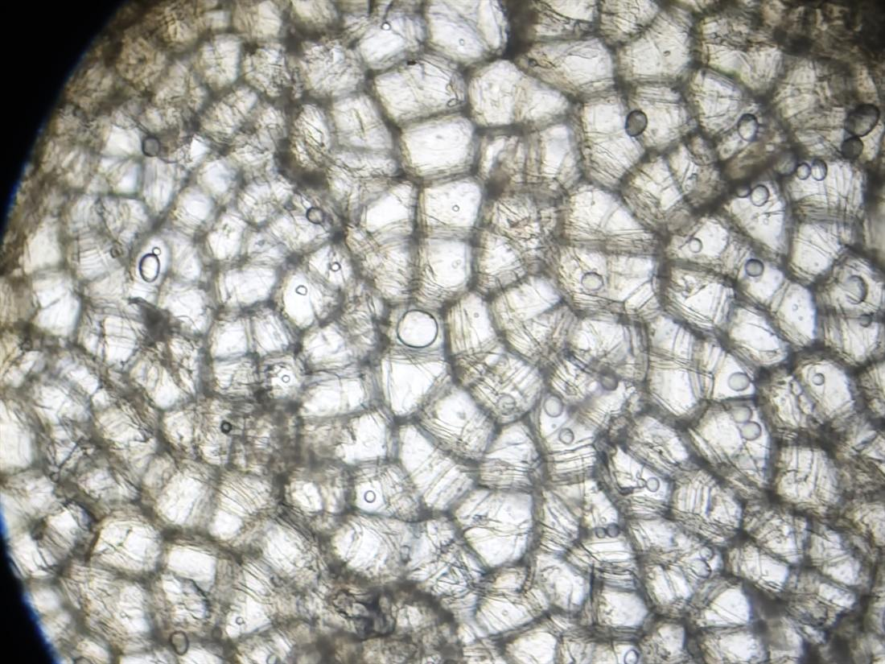
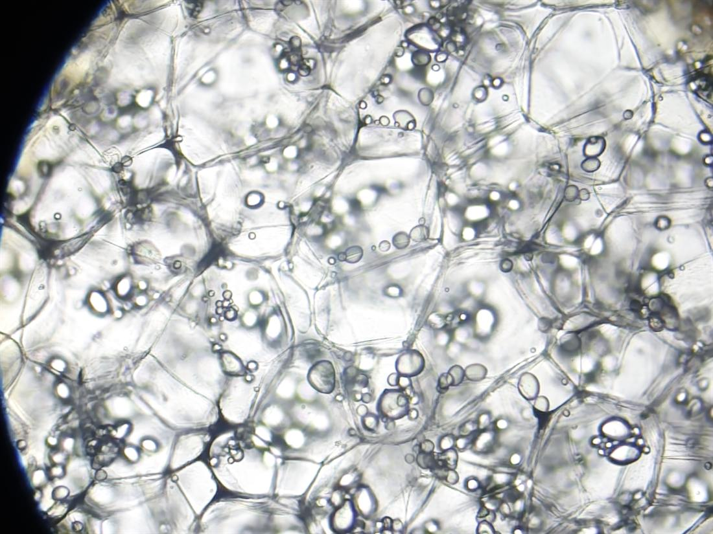

地図を読み込んでいるよ…
🔍 写真も地図も、押しているあいだ拡大して見られるよ（スマホは指を置いてすこし待ってね）。
🌍 の地図＝この子がもともと自生している場所を緑に。南米アンデスの高地（ペルー南部〜ボリビア北西部、チチカカ湖のまわり）が栽培化のふるさと。約8000〜1万年前に人が育てはじめた。
⭐南アメリカ・アンデス高地が原産——ペルー南部〜ボリビア北西部（チチカカ湖のまわり）で、約8000〜1万年前に人が育てはじめた作物だよ。⚠地図は国ごと塗っているけど、もとはアンデスの高い山の畑の子。⚠日本は塗っていない——ジャガイモは16世紀にスペインがヨーロッパへ持ち帰り、日本へはジャガタラ（ジャカルタ）経由で江戸のはじめに渡ってきた作物で、日本はふるさとじゃないよ。⭐いまは世界じゅうで作られる主食級の野菜だけど、生まれ故郷はアンデスの寒い高地なんだ。
⚠ 地図は国（日本と中国だけ県・省）までしか塗れないから、ほんとうの分布より広く見えていることがあるよ。地図はだいたいの場所。正確なところは、上の文を見てね。
ジャガイモ
Solanum tuberosum L.
別名 · 馬鈴薯（ばれいしょ）／ジャガタラ芋／英名 potato ／ 見どころ · ⭐顕微鏡で見る“ほくほくの正体”＝デンプン粒
ナス科 · Solanaceae（ナス属 Solanum）── 107ワルナスビと同じ属
おうちの食材台所のジャガイモを、おうちの顕微鏡で⚠植物体本体（葉・花・まるごとの芋）の写真は宿題。今回は“細胞”から先にお迎えしたよ
名前と学名の由来
- ⭐属名 Solanum（ソラヌム）は、ナス類をあらわすラテン語の古い植物名。solamen（なぐさめ・鎮静）から、とも言われる（この仲間は昔から薬にも毒にも使われた）。ナス・トマト・ピーマン・トウガラシと、ぜんぶおなじ属だよ。この図鑑ではNo.107ワルナスビ（同じ Solanum）と親戚。
- ⭐種小名 tuberosum（トゥベロースム）は、ラテン語 tuber（こぶ・ふくらみ）＋ -osus（〜が多い）＝「こぶ（塊茎）をいっぱいつける」。──わたしたちが食べる“あのお芋”そのものが、学名になっているんだ。学名は、体の特徴を先に言うことが多いね。
- 和名「ジャガイモ」は、「ジャガタラ芋」の略。ジャガタラ＝ジャカルタ（今のインドネシア）のことで、江戸時代のはじめ、オランダ船がジャカルタ経由で日本へ運んできた芋だから、この名前になったよ。
- 別名「馬鈴薯（ばれいしょ）」は中国由来の名前。馬につける鈴（馬鈴）に形が似た芋、という説がある。英名 potato は、スペイン語 patata から（もとはサツマイモを指す言葉と混ざったんだ）。
この植物のこと
- ナス科ナス属の多年草（畑では一年で育てて収穫する）。南米アンデスの高い山がふるさとで、いまは世界じゅうで作られる主食級の野菜。米・小麦・トウモロコシとならぶくらい、人類を支えてきた作物だよ。
- ⭐⭐「お芋」は根っこじゃなくて、じつは“茎”。土のなかの地下茎の先が、デンプンをためてふくらんだもの＝塊茎（かいけい）なんだ。証拠は「芽（め）」——芋のくぼみから出る芽は、茎につく側芽（わき芽）そのもの。根っこには芽は出ないよね。だから、この芋は“ふとった茎”なんだ。
- ⚠芽と、光で緑色になった皮のところには、毒（ソラニン・チャコニン）がある。ナス科の仲間がもつステロイド系のアルカロイドで、食べるとおなかをこわす。だから燻太さんの言うとおり、芽はしっかり取り除いて、緑の皮は厚めにむくのが大事だよ。
- ⭐中身のほとんどが「デンプン」。じゃがいもは水分が多いけど、乾いたぶんの大半がデンプン。だから食べすぎると太っちゃう（デンプン＝ブドウ糖がたくさんつながったもの＝エネルギーのかたまり）。ほくほくのおいしさの正体でもあるんだ。
⭐ 顕微鏡で見えているもの（2026.07.20）
- 今回の2枚は、塊茎（お芋）をうすく切って、そのまま見た断面だよ。写真①・②に写っている、しきりで区切られた大きな部屋のひとつひとつが、貯蔵柔組織（ちょぞうじゅうそしき）の細胞——お芋の“ためこみ係”の細胞なんだ。
- ⭐部屋のなかの、まるい・たまご形のツブツブが「デンプン粒」（＝アミロプラストという色素体のなかに、デンプンをためたもの）。写真②の高倍では、ひと部屋のなかにデンプン粒がいくつも入っているのがくっきり見えるね。じゃがいものデンプン粒は、植物のなかでもとくに大きいほうで、たまご形で、よく見ると年輪みたいなうっすらした縞（層）があるんだ。
- ⭐この“デンプンの倉庫”が、そのままわたしたちの食べもの。顕微鏡で見ると、「じゃがいもを食べる＝アンデスの植物がためた糖のかたまりを分けてもらっている」ってことが、細胞のレベルで分かるね。
- ⚠スケールバー（大きさの目もり）は、いま実装中。対物ミクロメーターで較正して、あとで入れるね。もう少し待っててね。
⭐ コラム ── 燻太さんのヒントを、科学で回収
- 燻太さんがくれたヒントは、ぜんぶちゃんと理由があるよ。
- 🥔「芽はちゃんと取り除いてね」 → 芽（＝茎のわき芽）と緑の皮にはナス科の毒ソラニンがある。だから取りのぞく。芽があること自体が「お芋＝茎」の証拠でもあったね。
- 🥔「生食はそれほど一般的でない」 → 生のデンプン粒（β-デンプン）は消化されにくくて、味もよくない。だから生でボリボリは、あまりしないんだ。
- 🥔「煮ても焼いても」「蒸してバター」 → 熱を加えると、デンプン粒が水を吸ってふくらんでとろける＝糊化（こか／α化）。こうなると消化されやすく、ほくほく甘くなる。じゃがバターがおいしいのは、この糊化のおかげ。
- 🥔「食べすぎたら太る」 → 中身の大半がデンプン（エネルギー源）だからね。おいしいけど、ほどほどに。
⭐ つぎの予告 ── 偏光板で「マルタ十字」
- じゃがいものデンプン粒は、偏光顕微鏡（リニア偏光板を2枚クロスにする）で見ると、粒のまんなかに黒い十字（マルタ十字）が浮かぶんだ。デンプンの分子が規則ただしく並んでいる（結晶っぽい）しるしだよ。
- ⭐そして熱で糊化させると、その十字が消える。「生 → 加熱」で十字が消えるようすを見れば、上のコラムの「加熱でとろける」を、目で確かめられる。偏光板が届いたら、いっしょにやってみようね。
参考：Wikipedia「ジャガイモ」（Solanum tuberosum・ナス科／塊茎＝地下茎の変形／原産は南米アンデス／芽と緑色部にソラニン）／文部科学省「食品成分データベース」（じゃがいもの主成分＝デンプン）をもとに整理。学名の意味は tuber（こぶ）＋-osus（多い）から。